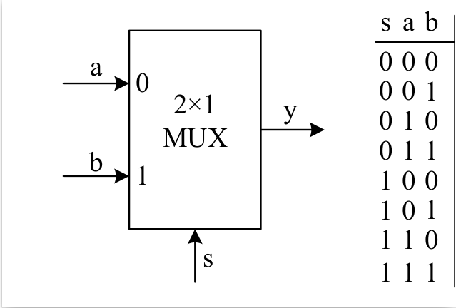
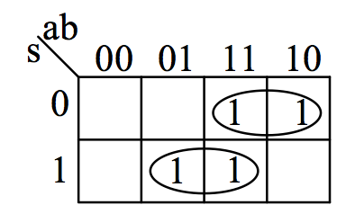
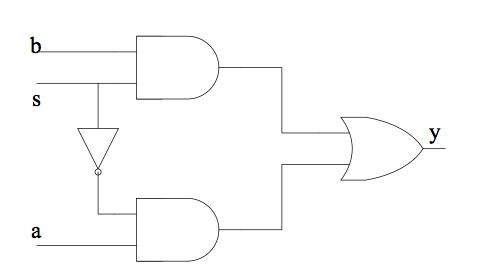
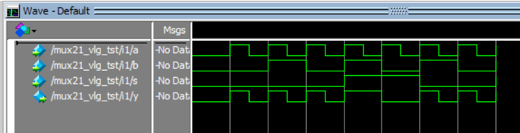
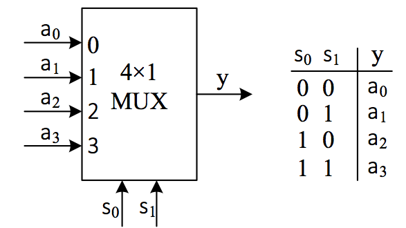
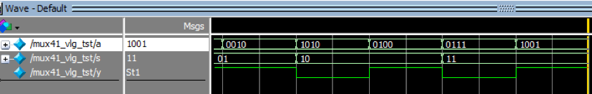
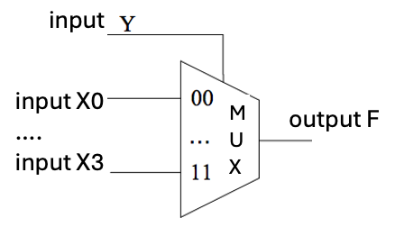

Lab 1: Multiplexers
To be, or not to be, that is the question.
—Hamlet, Shakespeare
A multiplexer is a commonly used circuit in digital logic systems and one of the main components of combinational logic circuits. It consists of multiple data inputs, one or more selection control ports, and one data output. A multiplexer selects one of the multiple inputs and transmits it to the output port. The selection control signal determines which input signal is output. There are a large number of parallel computations in digital circuits. The usual design idea is to use the circuit to generate all possible digital signals at the same time, and then use a multiplexer to select which signal to output.
This lab will introduce several commonly used multiplexer design methods, as well as the use of always statements, if-else statements, and case statements in Verilog. Finally, readers are asked to design a multiplexer themselves to familiarize themselves with the basic circuit design process and the use of Quartus.
2-to-1 multiplexer
The following figure shows the block diagram and truth table of a 2-to-1 multiplexer. In the figure, \(a\) and \(b\) are the inputs; \(y\) is the output port, and \(s\) is the selection port, which selects one of the two inputs to output. When \(s\) is 0, the output value of \(y\) is \(a\). When \(s\) is 1, the output value of \(y\) is \(b\).

Fig. 1 2-to-1 multiplexer module and its truth table
The figure below shows the Karnaugh map of a 2-to-1 multiplexer. Based on the Karnaugh map, the expression for the 2-to-1 multiplexer can be derived as \(y=(\sim s\&a)|(s\&b)\).

Fig. 2 Karnaugh map of a 2-out-of-1 multiplexer
Draw the logic circuit for the expression as shown in the figure below.

Fig. 3 Logic circuit for a 2-to-1 multiplexer
Dataflow modeling
Dataflow modeling mainly describes the function of a circuit through continuous assignment statements assign.
Based on this logic circuit diagram, the logic circuit of a 2-to-1 multiplexer is implemented using Verilog HDL, as shown in the following example:
module m_mux21(a,b,s,y);
input a,b,s; // Declare three wire-type input variables a, b, and s, each with a width of 1 bit.
output y; // Declare 1 wire-type output variable y, with a width of 1 bit.
assign y = (~s&a)|(s&b); // Implement the logic function of the circuit.
endmodule
Design a stimulation code to simulate the function of the multiplexer in the design:
#include "verilated.h"
#include "verilated_vcd_c.h"
#include "obj_dir/Vmux21.h"
VerilatedContext* contextp = NULL;
VerilatedVcdC* tfp = NULL;
static Vmux21* top;
void step_and_dump_wave(){
top->eval();
contextp->timeInc(1);
tfp->dump(contextp->time());
}
void sim_init(){
contextp = new VerilatedContext;
tfp = new VerilatedVcdC;
top = new Vmux21;
contextp->traceEverOn(true);
top->trace(tfp, 0);
tfp->open("dump.vcd");
}
void sim_exit(){
step_and_dump_wave();
tfp->close();
}
int main() {
sim_init();
top->s=0; top->a=0; top->b=0; step_and_dump_wave(); // Initialize s, a, and b to “0”.
top->b=1; step_and_dump_wave(); // Change b to “1”, keep the values of s and a unchanged, and continue to keep them as “0”.
top->a=1; top->b=0; step_and_dump_wave(); // Change a and b to “1” and “0” respectively, and the value of s remains unchanged.
top->b=1; step_and_dump_wave(); // Change b to “1”, keep the values of s and a unchanged, and maintain 10 time units.
top->s=1; top->a=0; top->b=0; step_and_dump_wave(); // Set s, a, and b to “1, 0, 0” respectively, and maintain for 10 time units.
top->b=1; step_and_dump_wave();
top->a=1; top->b=0; step_and_dump_wave();
top->b=1; step_and_dump_wave();
sim_exit();
}
The simulation results obtained after analyzing and synthesizing the above code are shown in the figure below. As can be seen from the figure, when \(s=0\), \(y=a\), i.e., \(y\) changes with the change in the value of \(a\), and the value of \(b\) does not affect the value of \(y\) regardless of how it changes. When \(s=1\), \(y=b\), meaning that \(y\) changes with the value of \(b\). At this point, changing the value of \(a\) in any way does not affect the value of \(y\).

Fig. 4 2-to-1 multiplexer simulation results
Structured modeling
Structured modeling mainly describes the functions of circuits through layer-by-layer instantiation of submodules. The program listing for designing a multiplexer using structured modeling is shown below:
module my_and(a,b,c);
input a,b;
output c;
assign c = a & b;
endmodule
module my_or(a,b,c);
input a,b;
output c;
assign c = a | b;
endmodule
module my_not(a,b);
input a;
output b;
assign b = ~a;
endmodule
module mux21b(a,b,s,y);
input a,b,s;
output y;
wire l, r, s_n; // Internal wire Declaration
my_not i1(.a(s), .b(s_n)); // Instantiation of not gate, implementation of ~s
my_and i2(.a(s_n), .b(a), .c(l)); // Instantiation of and gate, implementation of (~s&a)
my_and i3(.a(s), .b(b), .c(r)); // Instantiation of and gate, implementation of (s&b)
my_or i4(.a(l), .b(r), .c(y)); // Instantiation of or gate, implementation of (~s&a)|(s&b)
endmodule
Behavior modeling
Behavior modeling describes the behavior of circuits using a process-oriented programming language. For example, in Verilog, an if statement can be used to implement the behavior of a 2-to-1 multiplexer. The program listing for designing a multiplexer using an if statement is shown below:
module mux21c(a,b,s,y);
input a,b,s;
output reg y; // y is assigned a value in the always block, so it must be declared as a reg type variable.
always @ (*)
if(s==0)
y = a;
else
y = b;
endmodule
Using the always statement block
always @(<list of sensitive events>)
executable statements;
......
The list of sensitive events contains all signals that affect the output of the always block. In other words, if any variable in the list of sensitive events changes, the statements in the always statement block are executed. For example, always @ (a or b or s) means that as soon as any of the variables a, b, or s changes, the statements in the always statement block are executed immediately.
For convenience, the sensitive list can also be replaced with \(*\), such as always @ (*). Here, the \(*\) symbol will automatically include all signals that appear on the right side of the statements or conditional expressions in the always statement block. As shown in the always statement block on line 5 of the above code, whenever any of the variables a and b appearing on the right side of the expression in the always statement block, or the variable s appearing in the conditional expression, changes, the statements within the always statement block are immediately executed.
The always statement also has another form, namely: when the always keyword is used without any information about a list of sensitive events, it indicates that the statements within the always statement block will be executed under any circumstances.
In addition, the output signals in the always block must be declared as reg type, rather than the default wire type.
About if statements
The if statement is a commonly used conditional statement in Verilog HDL. It can be used in conjunction with the else statement or on its own.
However, if an if statement is used without a corresponding else statement, the following situation occurs: the compiler evaluates whether the condition expression following the if statement is satisfied. If it is satisfied, the subsequent statements are executed. But what if the condition expression is not satisfied? In this case, the compiler automatically generates a register to store the current value, preserving the previous value when the condition is not met. This results in the creation of an extra register that the user did not design. Therefore, it is recommended that readers include an else statement to pair with the if statement when using it, to prevent the creation of unnecessary registers.
Additionally, the compiler assumes only one functional statement per if statement. If there are multiple functional statements, they must be enclosed using the keywords begin and end. For example:
if(s==0)
y = a; x = b;
else
y = b; x = a;
This is incorrect and should be changed to:
if(s==0)
begin y = a; x = b; end
else
begin y = b; x = a; end
In programming, conditional statements can also be used instead of if statements. If sequential statements are not used at this point, the always statement block is not required. For example, ? can also be used instead of if statements. Its usage is as follows:
assign y = s ? b : a;
The meaning is as follows: if s = 1, then y = b; otherwise, y = a. This 2-out-of-1 multiplexer code can also be written as follows:
module mux21d(a,b,s,y);
input a,b,s;
output y; // you don't need to declare y as a reg type anymore.
assign y = s ? b : a;
endmodule
It is strongly recommended that beginners do not use behavior modeling to design circuits.
Verilog was not originally proposed for designing synthesizable circuits. It is essentially a circuit modeling language based on an event queue model. Therefore, behavior modeling can easily distract beginners from the original purpose of describing circuits: developers need to look at the circuit diagram, imagine the behavior of the circuit in their minds, then convert it into an event queue model way of thinking, and finally use behavior modeling to describe the behavior of the circuit. The synthesizer then derives the corresponding circuit based on this description. From this process, it is not only unnecessary but also prone to errors:
If developers already have a circuit diagram in mind, it is most convenient to describe it directly.
If developers already have a circuit diagram in mind, but their understanding of behavior modeling is biased, they may use the wrong description method and design an unexpected circuit.
If the developer does not have a circuit diagram in mind, but expects the synthesizer to generate a circuit with a certain behavior through behavior modeling, this deviates from the essence of “describing circuits.” Most students are prone to making this mistake, treating behavior modeling as procedural C language and attempting to map arbitrary complex behavior descriptions to circuits. Ultimately, the synthesizer will only generate low-quality circuits with high latency, large area, and high power consumption.
Therefore, until everyone has mastered the concept of “describing circuits” and is no longer misled by behavior modeling, we strongly recommend that beginners stay away from behavior modeling and only describe circuits directly through dataflow modeling and structured modeling. For example, the above statements about if and always are correct to a certain extent, but the following questions can help you test whether you have mastered the essence of Verilog:
What is the precise meaning of “execution” in hardware description languages?
Who executes Verilog statements? Is it the circuit, the synthesizer, or something else?
If the condition of an “if” statement is met, the statements following ‘else’ are not executed. What does “not executed” mean here? How is this related to describing circuits?
There is “concurrent execution,” “sequential execution,” “execution immediately upon any variable change,” and “execution under any circumstances.” How are these manifested in the designed circuit?
If you cannot answer these questions clearly, we strongly recommend that you do not use behavior modeling. If you really want to understand them, you need to read the Verilog Standard Manual .
True description of circuits = instantiation + wiring
Forget about behavior modeling, and you can easily return to the simple essence of describing circuits. Imagine that you have a circuit diagram in your hand. If you need to describe the contents of the diagram to others, how would you describe it? You would definitely say something like, “There is an A component/module, and its x pin is connected to the y pin of another B component/module,” because this is the most natural way to describe a circuit. Designing circuits using HDL is essentially describing the circuit diagram using HDL. Whatever is on the diagram is directly described. Therefore, describing circuits using HDL boils down to two things:
Instantiation: Place a component/module on the circuit board. It can be a gate circuit or a module composed of gate circuits.
Wiring: Use wires to connect the pins of the components/modules correctly.
You can see how dataflow modeling and structured modeling reflect these two things, and how behavior modeling complicates these two simple things.
4-to-1 multiplexer
The block diagram and truth table of the 4-to-1 multiplexer are shown in the figure below. \(a_0 - a_3\) are the four input ports, \(s_0\) and \(s_1\) are the selection ports, and \(y\) is the output port. Depending on the values of \(s_0\) and \(s_1\), \(y\) selects one of \(a_0-a_3\) as the output. For details, please refer to the truth table.

Fig. 5 4-to-1 multiplexer module and truth table
The case statement in Verilog can synthesize a “multiplexer” circuit, which is very readable. The following shows how to implement a 4-to-1 multiplexer using a case statement:
module mux41(a,s,y);
input [3:0] a; // Declare a wire-type input variable a with a variable width of 4 bits.
input [1:0] s; // Declare a wire-type input variable s with a variable width of 2 bits.
output reg y; // Declare a 1-bit reg type output variable y.
always @ (s or a)
case (s)
0: y = a[0];
1: y = a[1];
2: y = a[2];
3: y = a[3];
default: y = 1'b0;
endcase
endmodule
The test code for the above design is shown below.
int main() {
sim_init();
top->s=0b00; top->a=0b1110; step_and_dump_wave();
top->a=0b0001; step_and_dump_wave();
top->s=0b01; top->a=0b1110; step_and_dump_wave();
top->a=0b0010; step_and_dump_wave();
top->s=0b10; top->a=0b1010; step_and_dump_wave();
top->a=0b0100; step_and_dump_wave();
top->s=0b11; top->a=0b0111; step_and_dump_wave();
top->a=0b1001; step_and_dump_wave();
sim_exit();
}
The simulation results of the above program are shown in the figure below.

Fig. 6 4-to-1 multiplexer simulation diagram
Using case statements
The case statement begins with the keyword case followed by an enclosed “selection expression”. The result of the expression represents an integer. Below are the case options, each consisting of a selection list and a procedure statement. The selection list can be a single integer value or multiple integer values, separated by commas. The selection list and procedure statement are connected by a colon, such as 0,1: y = a[0];.
The execution process of a case statement is as follows: first, calculate the value of the selection expression; then, find the first selection in the case options that matches the value of the selection expression; finally, execute the process statement following this selection value.
The list of options in a case statement may not always include all possible values of the selection expression. In such cases, the keyword default must be used as the last option in the case statement, representing all other values not covered by the list of options. Even if the selection list includes all options of the selection expression, it is generally recommended to retain the default option. If the selection list does not include all options of the selection expression and there is no default option, the synthesizer will synthesize a latch to preserve the previous output value in cases where it is not covered. This is generally an undesirable situation, so it is recommended to retain the default option in the case statement regardless of the circumstances.
If you want to execute multiple statements when a certain expression is true, you should also use the keywords begin and end to enclose these statements.
Similarly, we recommend that beginners avoid using case statements.
This is because using case statements to describe circuits is a form of behavior modeling. As circuits become more complex, you may end up writing case statements that contain if statements, which in turn contain nested case statements, but you will probably no longer understand what kind of circuit it describes.
A generic multiplexer template
We provide a generalized multiplexer template that can easily replace the case statement. The Verilog code for this multiplexer template is as follows:
module MuxKeyInternal #(NR_KEY = 2, KEY_LEN = 1, DATA_LEN = 1, HAS_DEFAULT = 0) (
output reg [DATA_LEN-1:0] out,
input [KEY_LEN-1:0] key,
input [DATA_LEN-1:0] default_out,
input [NR_KEY*(KEY_LEN + DATA_LEN)-1:0] lut
);
localparam PAIR_LEN = KEY_LEN + DATA_LEN;
wire [PAIR_LEN-1:0] pair_list [NR_KEY-1:0];
wire [KEY_LEN-1:0] key_list [NR_KEY-1:0];
wire [DATA_LEN-1:0] data_list [NR_KEY-1:0];
generate
for (genvar n = 0; n < NR_KEY; n = n + 1) begin
assign pair_list[n] = lut[PAIR_LEN*(n+1)-1 : PAIR_LEN*n];
assign data_list[n] = pair_list[n][DATA_LEN-1:0];
assign key_list[n] = pair_list[n][PAIR_LEN-1:DATA_LEN];
end
endgenerate
reg [DATA_LEN-1 : 0] lut_out;
reg hit;
integer i;
always @(*) begin
lut_out = 0;
hit = 0;
for (i = 0; i < NR_KEY; i = i + 1) begin
lut_out = lut_out | ({DATA_LEN{key == key_list[i]}} & data_list[i]);
hit = hit | (key == key_list[i]);
end
if (!HAS_DEFAULT) out = lut_out;
else out = (hit ? lut_out : default_out);
end
endmodule
module MuxKey #(NR_KEY = 2, KEY_LEN = 1, DATA_LEN = 1) (
output [DATA_LEN-1:0] out,
input [KEY_LEN-1:0] key,
input [NR_KEY*(KEY_LEN + DATA_LEN)-1:0] lut
);
MuxKeyInternal #(NR_KEY, KEY_LEN, DATA_LEN, 0) i0 (out, key, {DATA_LEN{1'b0}}, lut);
endmodule
module MuxKeyWithDefault #(NR_KEY = 2, KEY_LEN = 1, DATA_LEN = 1) (
output [DATA_LEN-1:0] out,
input [KEY_LEN-1:0] key,
input [DATA_LEN-1:0] default_out,
input [NR_KEY*(KEY_LEN + DATA_LEN)-1:0] lut
);
MuxKeyInternal #(NR_KEY, KEY_LEN, DATA_LEN, 1) i0 (out, key, default_out, lut);
endmodule
The MuxKey module implements the “key-value selection” function, which means that in a list lut of (key, data), based on the given key key, out is set to the matching data. If there is no data with the key key in the list, then out is set to 0. In particular, the MuxKeyWithDefault module can provide a default value default_out. When there is no data with the key key in the list, out is default_out. When instantiating these two modules, note the following two points:
The user must provide three parameters: the number of key-value pairs
NR_KEY, the bit width of the keyKEY_LEN, and the bit width of the dataDATA_LEN. The signal width of the port must match the provided parameters; otherwise, incorrect results will be output.If there are multiple data entries with the same key
keyin the list, the value ofoutis undefined. The user must ensure that the keys in the list are unique.
The implementation of the MuxKeyInternal module uses many advanced features, such as generate and for loops. For ease of writing, behavior modeling is also used, which we will not discuss here. Through the abstraction of structured modeling, users do not need to concern themselves with these details.
The following code implements a 2-to-1 multiplexer and a 4-to-1 multiplexer using multiplexer templates:
module mux21e(a,b,s,y);
input a,b,s;
output y;
MuxKey #(2, 1, 1) i0 (y, s, {
1'b0, a,
1'b1, b
});
endmodule
module mux41b(a,s,y);
input [3:0] a;
input [1:0] s;
output y;
MuxKeyWithDefault #(4, 2, 1) i0 (y, s, 1'b0, {
2'b00, a[0],
2'b01, a[1],
2'b10, a[2],
2'b11, a[3]
});
endmodule
Lab check-in contents
On-Board Lab: 2-bit 4-to-1 multiplexer
Use a multiplexer template to implement a 2-bit 4-to-1 multiplexer, as shown in the figure below. The multiplexer has five 2-bit inputs, namely X0, X1, X2, X3, and Y, and the output is F. X0, X1, X2, and X3 are four 2-bit input variables. The output port F is controlled by the control port Y, selecting one of the X outputs. When Y = 00, the output port outputs X0, i.e., F = X0; when Y = 01, the output port outputs X1, i.e., F = X1; and so on.

Fig. 7 2-bit 4-to-1 multiplexer
Select SW0 and SW1 on the development board as control terminal Y, and SW2–SW9 as the four two-bit data input ports X0–X3. Connect the two-bit output port F to the light-emitting diodes LEDR0 and LEDR1 to display the output. Complete the design, perform functional simulation on your design, and download it to the development board to verify the circuit performance.
Online test
Implement a simple 2-bit 4-to-1 multiplexer.